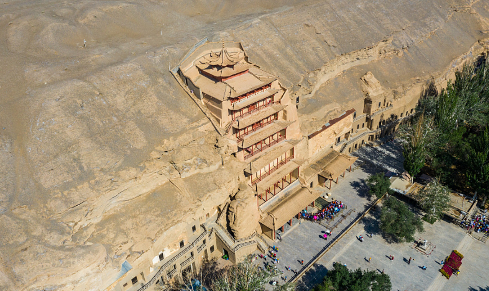
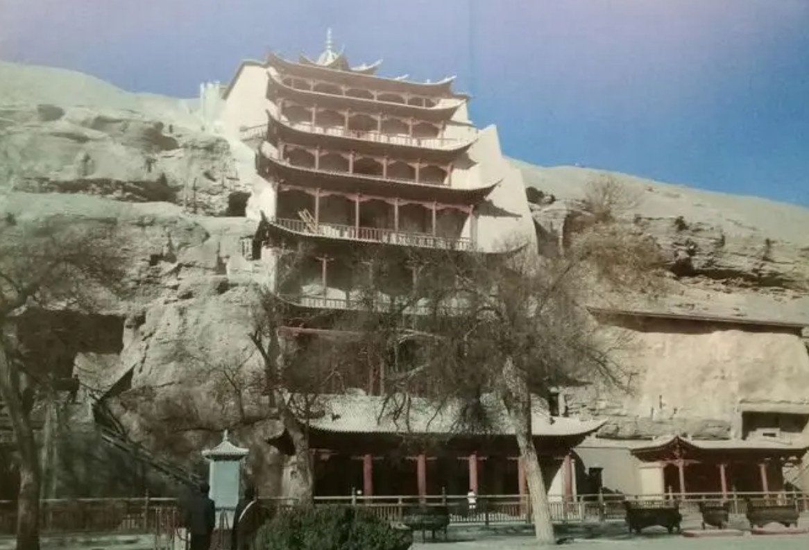
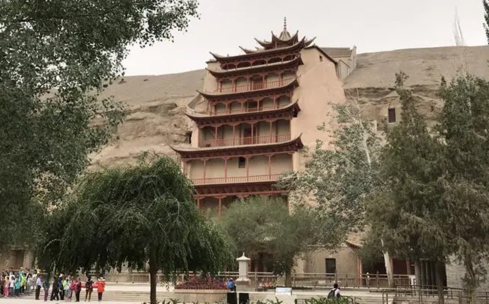
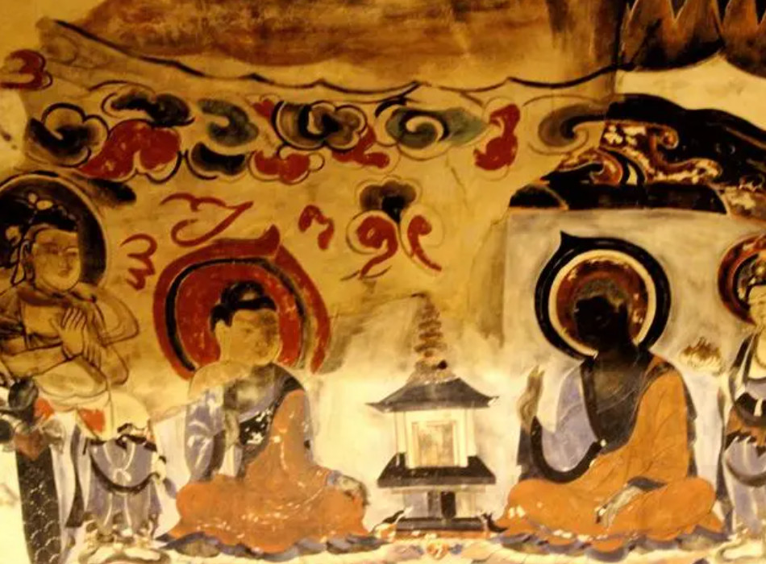
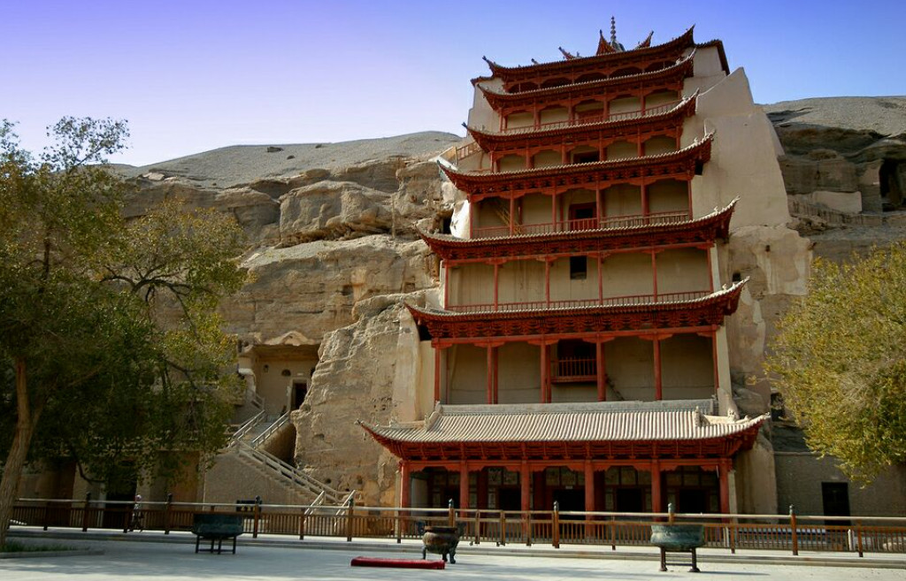
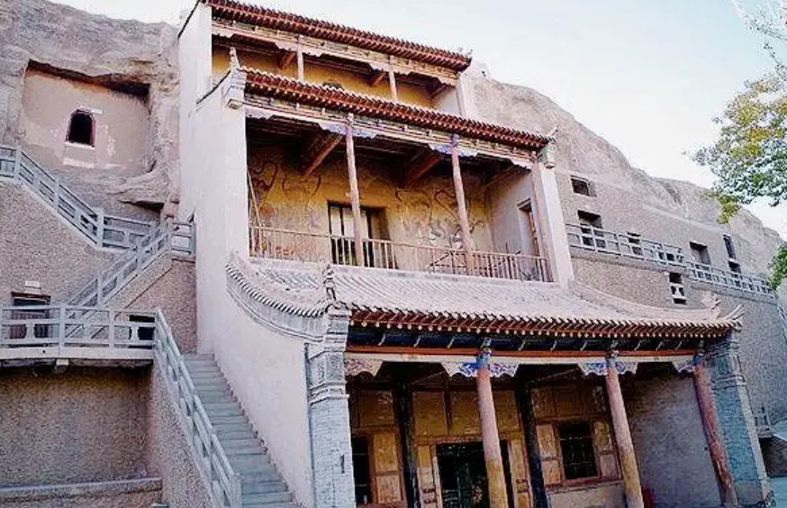
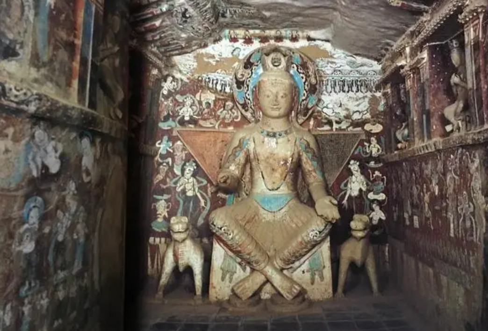
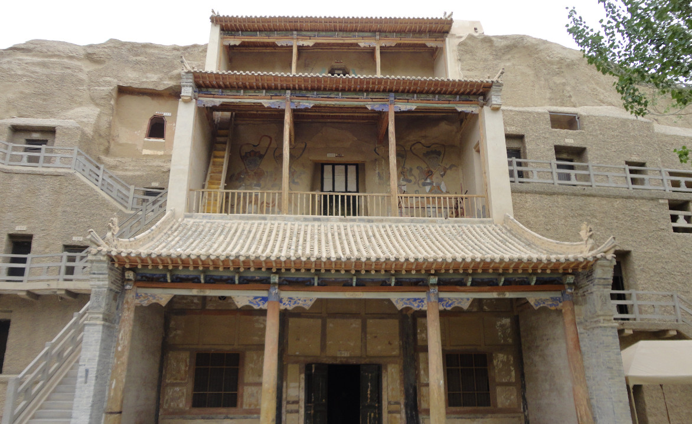
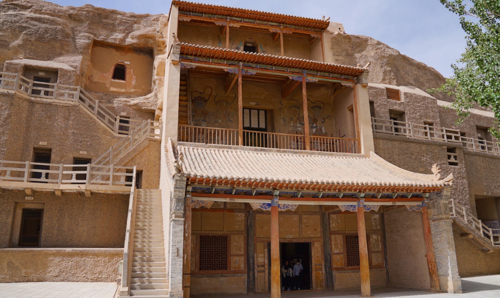
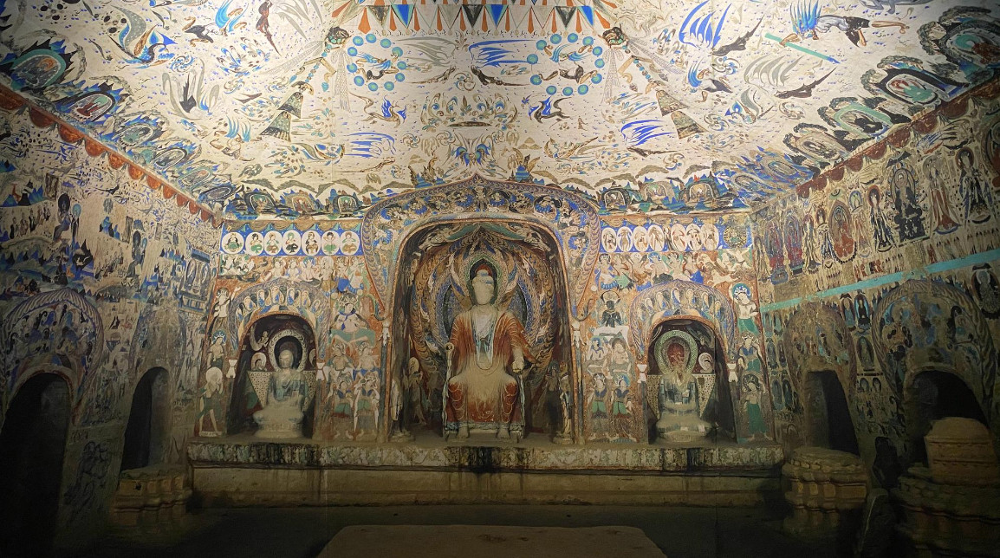

The Mogao Caves are Dunhuang's crown jewel and a UNESCO World Heritage Site. This complex of 735 cave temples carved into a cliff face contains some of the finest examples of Buddhist art spanning 1,000 years. Visitors can marvel at the exquisite murals depicting Buddhist stories, daily life, and mythological scenes, as well as the beautifully painted sculptures of Buddhas and bodhisattvas. The caves represent the greatest artistic achievement of ancient Chinese civilization.
Also known as the Caves of the Thousand Buddhas, they contain over 45,000 square meters of murals and more than 2,400 painted sculptures spanning a period of approximately 1,000 years from the 4th to the 14th century. These caves represent the pinnacle of Buddhist artistic achievement in China.




Attraction List
Mogao Caves, Mingsha Mountain, Crescent Lake, Yadan Geological Park, Yumen Pass, Yangguan Pass, Dunhuang Museum, and the Western Thousand Buddha Caves.
View History
The Mogao Caves are Dunhuang's crown jewel and a UNESCO World Heritage Site. This complex of 735 cave temples carved into a cliff face contains some of the finest examples of Buddhist art spanning 1,000 years. The caves represent the greatest artistic achievement of ancient Chinese civilization.
UNESCO Heritage
Mingsha Mountain, or the "Singing Sand Dunes," is a spectacular natural wonder where massive sand dunes produce a musical sound when the wind blows or when visitors slide down their slopes. The dunes rise up to 250 meters high and stretch for 40 kilometers.
Natural Wonder
Crescent Lake is a breathtaking oasis nestled among the towering sand dunes of Mingsha Mountain. This spring-fed lake has maintained its crescent shape for thousands of years, earning it the poetic name "First Spring in the Desert." Surrounded by traditional Chinese pavilions and lush vegetation.
Desert Oasis
Located approximately 180 kilometers northwest of Dunhuang, the Yadan National Geological Park features a dramatic landscape of "earth forests" sculpted by wind erosion over millions of years. These unique rock formations resemble ancient castles, ships, and mythical creatures.
Geological Marvel
Known as the "Jade Gate Pass," Yumen Pass was one of the most important fortresses on the ancient Silk Road and the westernmost gateway of the Han Dynasty Great Wall. The desolate ruins have inspired countless Chinese poems throughout history.
Historic Fortress
Yangguan, or the "South Pass," was the twin fortress to Yumen Pass and served as another critical gateway on the Silk Road. Today, only a solitary beacon tower remains. The site is immortalized in the famous Tang Dynasty farewell poem by Wang Wei.
Ancient Gateway